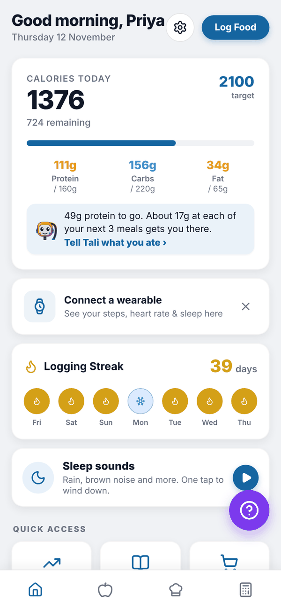
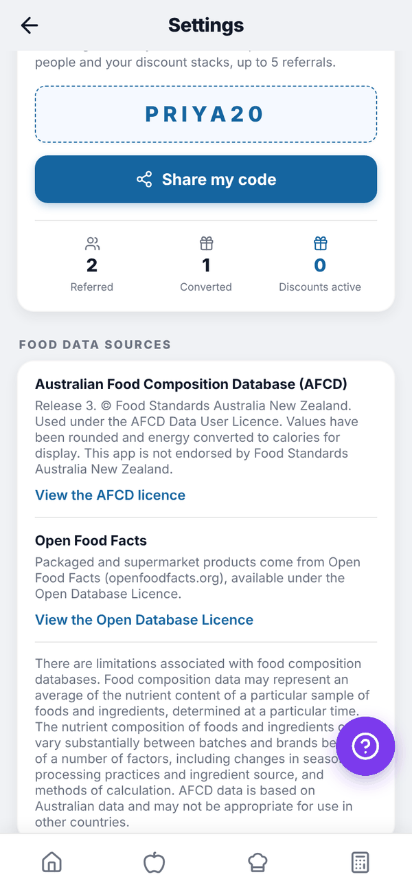
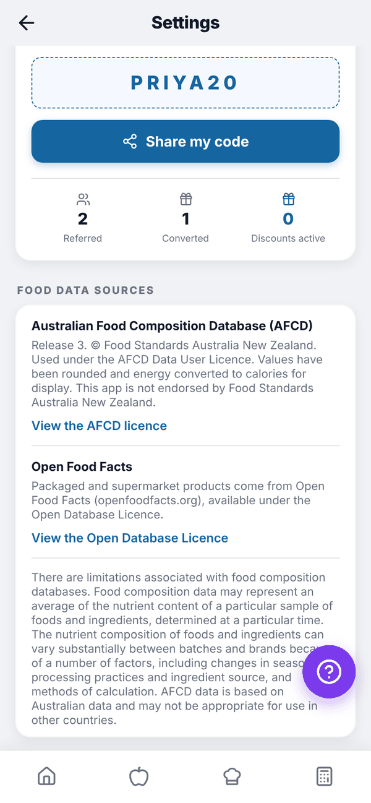
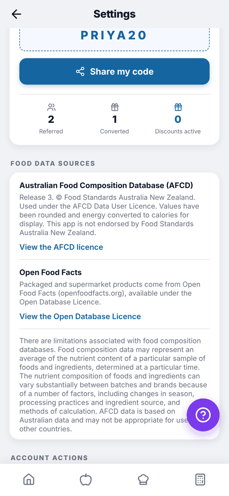

Totality Nutrition guide
Tali AI
Everything Tali can do in Totality Nutrition, what each feature costs, and the limits on each plan.
Tali is the assistant built into Totality Nutrition. She helps you log and plan, but she never logs or adds anything until you've checked it, and every calorie and macro number comes from the food database, not from the AI.

What Tali does#
| Feature | Where | Cost |
|---|---|---|
| Tell Tali what you ate | Home, Add food | Free (daily limit) |
| Read a recipe from a page or pasted text | Recipes, Import Recipe | 1 credit (back if no recipe is found) |
| Weekly summary of last week | Insights | 1 credit (re-opening is free) |
| Plan your days | Meal Plan | 5 credits |
| Protein tip | Home calories card | Free |
Limits by plan#
| Credits | Tell Tali per day | Protein tip | |
|---|---|---|---|
| Free | 0 | 3 | No |
| Nutrition Paid | 0 | 3 | No |
| Trial | 10 for the whole trial | 5 | Yes |
| Nutrition + AI Paid | 100 a month | 50 | Yes |
Credits on Nutrition + AI reset on the 1st of each month, Sydney time. Unused credits don't carry over. Trial credits don't reset.
See your credits#
Open Settings and scroll to TALI AI. The card shows your plan, credits left ("86 of 100 credits left"), when they reset, and "Meals described today: 2 of 50".



If you're not on Nutrition + AI, the card has a See Nutrition + AI button that opens the plans screen.
When Tali can't help#
- "You've used this month's AI credits." Wait for the reset on the 1st, or move up from the trial to Nutrition + AI.
- "Tali is not included in your current plan." The feature needs credits. See Plans compared.
- "Tali needs a quick breather." You've made a lot of requests in a few minutes. Try again shortly.
- "Tali could not finish that one. No credits were used." Something went wrong on our side. Tap Try again.
Questions#
Does Tali give medical or diet advice?
No. Tali works from your own logged data and targets. For anything about your health, see your GP or a dietitian.
Can I buy more credits?
Not separately in Nutrition. Nutrition + AI includes 100 a month.
Does the Nutrition plan include Tali?
It includes Tell Tali 3 times a day, the same as Free. Recipe reading, weekly summaries, meal plans by Tali and the protein tip are on Nutrition + AI (and the trial).
Is Tali the same as in Totality?
Yes, it's the same Tali. Credits in Nutrition come from your Nutrition plan.